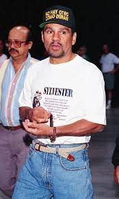

Детство и юность
Дуран был одним из восьмерых детей Маргарито Дурана Санчеса и Клары Саманьего, детство которых прошло в однокомнатной квартире на задворках Панама-Сити. Одна комната была маленькой и слишком тесной для столь большой семьи, поэтому Роберто спал на улице. Дуран рос в панамских трущобах, в невероятной нищете, питался из мусорных баков, и как только подрос достаточно, чтобы постоять за себя на улице, стал уличным чистильщиком обуви. Конкуренция на улице была столь жестокой, а безработица столь повсеместной, что даже за право чистить обувь на углу ему регулярно приходилось драться с другими мальчишками. На заработанные деньги он ходил в кинотеатр и смотрел мексиканские художественные фильмы о приключениях Эль-Санто (народного заступника, сражавшегося со злом, скрывавшего свою личность под борцовской маской). На экране Эль-Санто картинно хватал злодеев одной рукой за отворот одежды, а другой карал их за совершённые злодеяния. Именно бесконечный просмотр этих фильмов повлиял на весьма оригинальный стиль бокса Дурана. Боксировать Дуран начал уже в 8 лет. Говоря о детстве Дурана, спортивный обозреватель Пит Акстельм вопрошал: «Какое же чудовищное прошлое произвело эту свирепую машину уничтожения!?».[2]
Однажды, когда ему было 12 лет, Дуран пробрался через ограду богатой фазенды, чтобы украсть несколько спелых кокосов себе на пропитание. Хозяин фазенды, Карлос Салета, местный влиятельный бизнесмен, как раз сидел у себя в саду, когда застал Дурана за кражей кокосов. Карлос поймал его, но узнав, что тот ворует чтоб не умереть с голоду, позвал своего непрошеного гостя к обеденному столу, накормил и подружился с ним. Они повстречались снова через четыре года, находясь в Кёльне, Карлос был зрителем на любительских соревнованиях по боксу, где Дуран выступал в четвертьфинале. Дуран дрался совершенно отчаянно, чем сразу привлёк внимание своего благотворителя. Карлос станет патроном для Дурана, будет организовывать его поездки зарубеж для участия в турнирах и встреч с рейтинговыми боксёрами современности. Впоследствии, Дуран никогда не забывал своего нищенского происхождения и всегда помогал бедноте в странах, в которых боксировал, однажды раздав милостыни на $10 тыс. за раз. После того как скончался его друг Эстебан де Хесус, умиравший у Дурана на руках, Роберто шёл по улицам и угощал десяток встреченных уличных мальчишек любыми сладостями, которые они захотят, всю ночь напролёт, после чего попрощался с ними, отвернулся от сопровождавшего его Альфонсо Кастильо и долго горько плакал[2].
Стиль бокса Дурана представлял собой вход в тесный контакт с соперником, практически в клинч, с первых же секунд боя, после чего Дуран методично «вязал» им руки, блокируя удары и интенсивно работая по корпусу. Дуран, в отличие от традиционной боксёрской техники, не возвращал бьющую руку обратно, как это принято повсеместно, а продолжал ею движение вперёд на захват или обхват рук или туловища соперника, его удары неожиданно для соперников переходили в захваты и наоборот, захваты переходили в удары. Поскольку большинство его соперников были не готовы к такого рода возне в обнимку, они через несколько раундов изнемогали в клинче, после чего Дуран, который действовал в привычной для себя среде и не уставал от борьбы вплотную, быстро переключался на среднюю дистанцию, откуда добивал измождённых соперников.

Video Бой жизни Дюрана